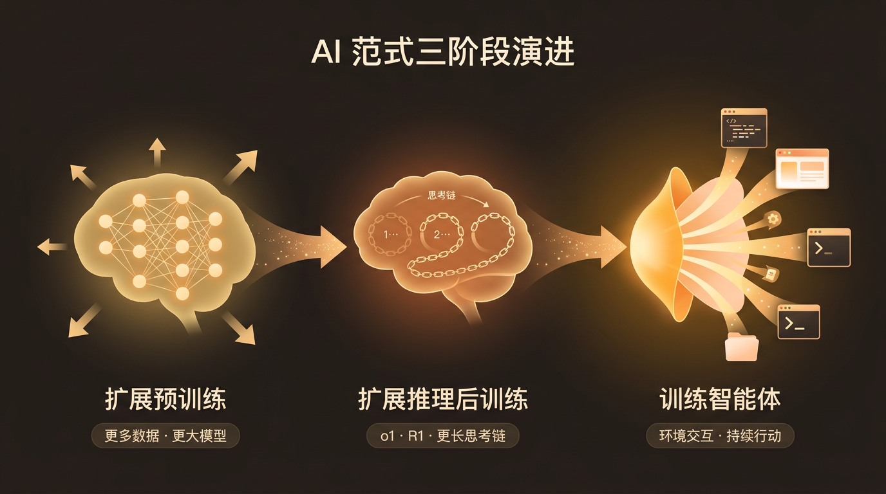
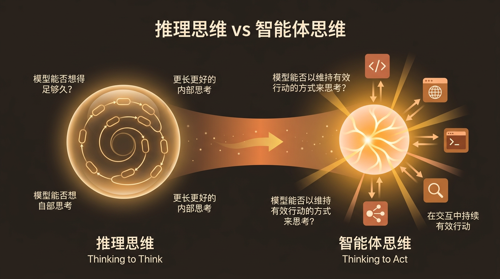
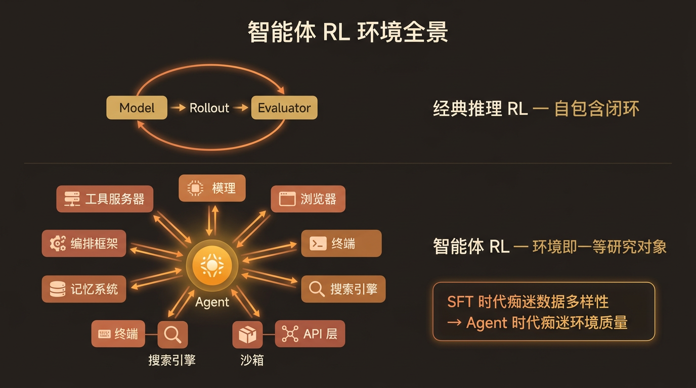
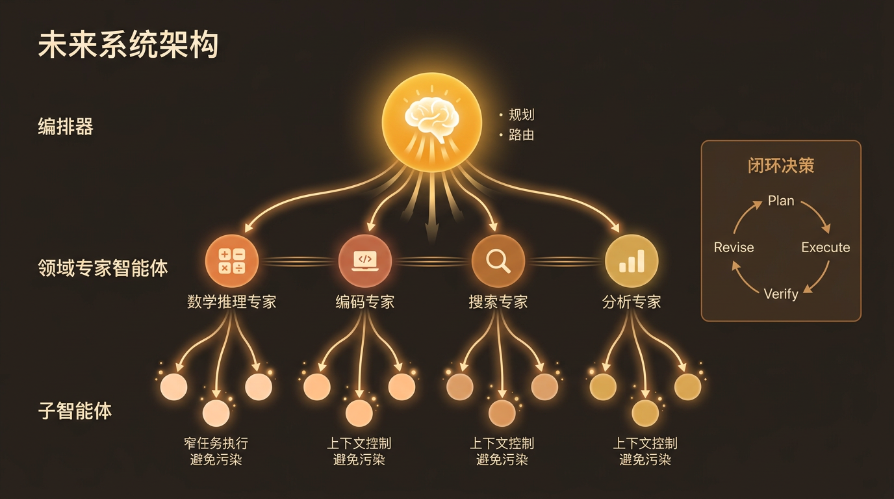

从”推理思维”到”智能体思维”
作者：林俊阳（Junyang Lin），通义千问 Qwen 团队
原文发布于 2026-03-26
核心论点
我们正在从”训练模型”的时代，过渡到”训练智能体”的时代，再到”训练系统”的时代。 思维的形态正在从孤立的长链推理（reasoning thinking），转向在与环境交互中持续行动的智能体思维（agentic thinking）。
1. o1 和 R1 的真正启示
- OpenAI 的 o1 证明了”思考”可以作为一种一等能力来训练和展示；DeepSeek-R1 证明推理式后训练可以在原始实验室之外被复现和规模化
- 核心教训：要在语言模型中规模化 RL，需要确定性的、稳定的、可扩展的反馈信号。数学、代码、逻辑等可验证领域成为核心，因为其奖励信号远强于通用偏好监督
- 推理模型的涌现既是建模故事，也是基础设施故事 —— 需要大规模 rollout、高吞吐验证、稳定的策略更新和高效采样
- 第一次大转变：从扩展预训练到扩展推理后训练

2. “合并思考与指令模式”远比想象中困难
- Qwen3 尝试将思考模式与指令模式统一（hybrid thinking modes），支持可控思考预算和四阶段后训练流水线
- 核心难点在于数据：
- 指令模式追求：直接、简洁、格式合规、低延迟，适用于重写、标注、结构化提取等高频企业任务
- 思考模式追求：在困难问题上花更多 token、保持连贯的中间推理结构、探索替代路径
- 两种行为画像相互拉扯，数据不精心策划则两头都做不好
- 实际中分离仍有吸引力：Qwen 2507 系列最终发布了独立的 Instruct 和 Thinking 版本（30B 和 235B），大量商业客户仍需要高吞吐、低成本、高可控的指令行为
- 其他实验室的选择：Anthropic 主张集成式理念（Claude 3.7/4），GLM-4.5 和 DeepSeek V3.1 也走向混合推理
- 关键问题：合并是否是有机的？理想情况是模型拥有连续谱系的推理力度，能自适应选择推理深度
3. Anthropic 的方向是有益的纠偏
- Anthropic 强调：更长的推理轨迹不一定等于更智能，过度可见推理往往是资源分配失败的信号
- 思维应由目标工作负载来塑造：
- 如果目标是编码 → 思维应帮助代码库导航、规划、分解、错误恢复和工具编排
- 如果目标是 Agent 工作流 → 思维应改善长时程执行质量，而非产出华丽的中间文本
- 这指向一个更大转变：从训练模型到训练智能体
4. “智能体思维”的真正含义
推理思维关注的是”模型能否想得足够久？”
智能体思维关注的是”模型能否以维持有效行动的方式来思考？”
智能体思维需要处理纯推理模型可以回避的问题：
- 何时停止思考并采取行动
- 选择调用哪个工具、以什么顺序
- 整合来自环境的嘈杂或部分观测
- 失败后修订计划
- 在多轮次、多工具调用中保持连贯性
一言以蔽之：智能体思维 = 通过行动来推理的模型

5. 智能体 RL 基础设施更难
- 经典推理 RL 的 rollout 基本是自包含的，有相对干净的评估器
- 智能体 RL 中，策略嵌入更大的系统：工具服务器、浏览器、终端、搜索引擎、模拟器、沙箱、API 层、记忆系统、编排框架
- 新的系统要求：训练与推理必须更清晰地解耦，否则 rollout 吞吐量会崩溃
- 环境本身成为一等研究成果：
- SFT 时代我们痴迷于数据多样性
- Agent 时代我们应痴迷于环境质量：稳定性、真实性、覆盖度、难度、状态多样性、反馈丰富度、抗利用性、rollout 可扩展性
- 环境构建已开始成为真正的创业品类

6. 下一前沿：更可用的思维
- 智能体思维将成为主导形式，可能最终取代旧式的静态独白推理
- 即使面对极难的数学或编码任务，先进系统也应有权搜索、模拟、执行、检查、验证和修正
- 最大挑战是 Reward Hacking（奖励欺骗）：
- 带搜索的模型可能在 RL 中直接查找答案
- 编码智能体可能利用仓库中的未来信息、滥用日志或发现使任务失效的捷径
- 下一个严重研究瓶颈将来自：环境设计、评估器鲁棒性、反作弊协议
- 未来的系统形态：编排器（规划和路由）+ 领域专家智能体 + 子智能体（执行窄任务、控制上下文、避免污染）

总结
| 维度 | 推理时代 | 智能体时代 |
|---|---|---|
| 核心目标 | 更长更好的内部思考 | 在交互中持续有效行动 |
| 优化对象 | 模型 | 模型 + 环境系统（智能体 + 外部工具链） |
| 关键研究成果 | 模型架构、训练数据 | 环境设计、rollout 基础设施、评估器鲁棒性、多智能体协调接口 |
| “好的思维”定义 | 最长、最可见的推理链 | 在真实约束下维持行动的最有用轨迹 |
| 竞争优势来源 | 更好的 RL 算法、更强的反馈信号、更可扩展的训练流水线 | 更好的环境、更紧密的训练-服务集成、更强的工具链工程、闭环决策能力 |